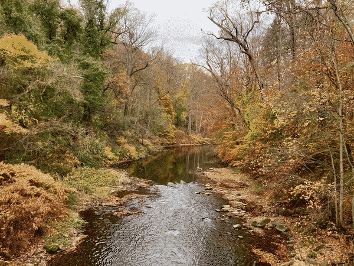
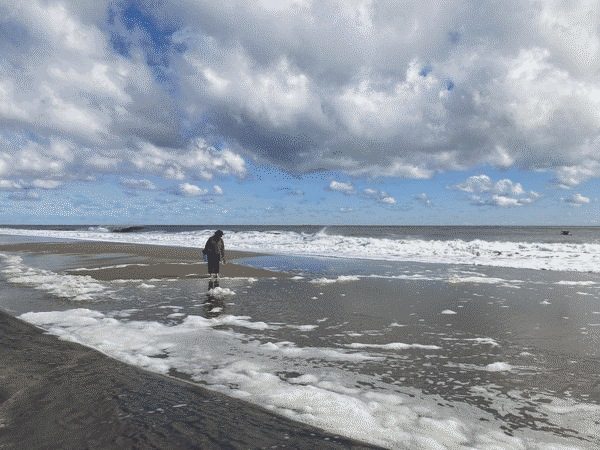

Back in the saddle

After a few weeks working at my new job and settling into new habits, there's a part of me that feels like I'm
waking up from something. I really did not enjoy my last job. While I knew it was t... Read more
New year. New job. New habits.

New year. I am newly 35 years old and just came through a tough but still good year. Many
years have been tough for me, but in the grand scheme of tough years, 2023 was pretty easy on me. This y... Read more
A personal financial project

Earlier this year I built a project
that came from a personal need. I have three student loans from my time at University of the Arts, my time at
Temple University, and my coding... Read more
Season of Change

Autumn is in full show here in Philadelphia, at least up in the Northwest of Philly where I now live. The colors
are a great time to reflect on the passage of time. It being the weekend daylight... Read more
Smaller code and bigger plans

Over the past few weeks I have released a tutorial to make the classic video game, Minesweeper, from scratch
using native web tools (being HTML, CSS, and Javascript). (Check out parts 1, 2, & 3!... Read more
How to make Minesweeper part 3

How to make Minesweeper part 3
This is the final part of this 3-part series! I recommend starting with part 1 and also working through part 2 before moving on
to this one. If you have already worked through parts 1 ... Read more